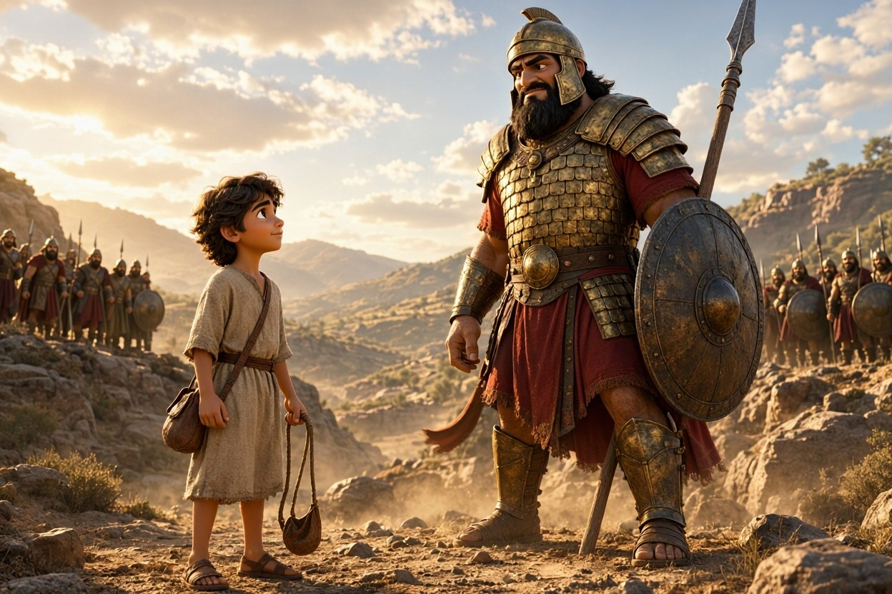
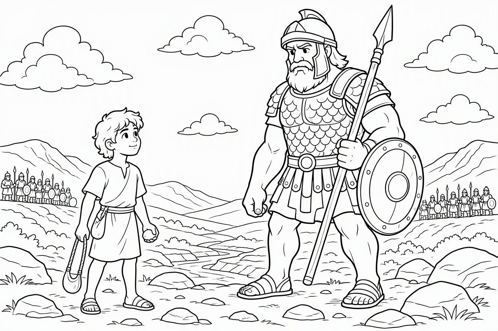

Criador Inteligente de Aulas
Crie Toda a Sua Aula com Apenas 1 Comando
Digite a história, versículo ou palavra bíblica. O sistema gera a história, ilustração colorida, caça-palavras, quiz, aplicação, atividades e gabarito na hora!
Aula pronta para aplicação!
Folha 1 de 3
Padrão A4 • A Palavra & História
Visualização Fiel de Impressão
Lição Bíblica Infantil • 1 Samuel 17
Davi e o Gigante Golias
Palavra na Íntegra (Versículo Bíblico):
"O Senhor é a minha força e o meu escudo; nele o meu coração confia, e dele recebo ajuda."
Imagem Ilustrada da Mensagem
Baixar Imagem

Palavra em Forma de História (Para as Crianças):
Folha 2 de 3
Padrão A4 • Colorir, Caça & Quiz
Visualização Fiel de Impressão
Desenho para Colorir (Pinte a História com Capricho!)
Baixar JPG

Caça-Palavras Bíblico (10x10)
5 palavras
5 Palavras para Procurar:
Quiz Bíblico da Lição
Marque um (X)
Folha 3 de 3
Padrão A4 • Storyboard & Aplicação
Visualização Fiel de Impressão (Storyboard Ampliado + Aplicação & Tarefa)
Storyboard Ampliado
1. A História em Cenas (HQ com Falas)
2. Aplicação da Palavra no Coração (Para Viver Todo Dia):
Vida Prática
🙏
Minha Oração Diária:
"Querido Deus, quando eu sentir medo ou incerteza, enche meu coração da Tua coragem e me ajuda a confiar sempre no Teu amor. Amém!"
3. Tarefa de Aplicação na Semana (Missão em Família):
Segunda a Domingo
Check-in Diário em Família:
Seg [ ]
Ter [ ]
Qua [ ]
Qui [ ]
Sex [ ]
Sáb [ ]
Dom [ ]
🗝️
Folha do Professor • Gabarito Oficial
Respostas do Quiz e coordenadas das palavras no Caça-Palavras
Gabarito das Perguntas do Quiz:
Localização no Caça-Palavras:
Observações Gerais & Diário do Educador:
Registro pedagógico, frequência, orações e avaliação da aula
[ ] Alto
[ ] Médio
[ ] Atenção
Checklist do Educador para a Semana:
[ ] Enviar desafio aos pais
[ ] Orar pelos pedidos da turma
[ ] Preparar material da próxima aula